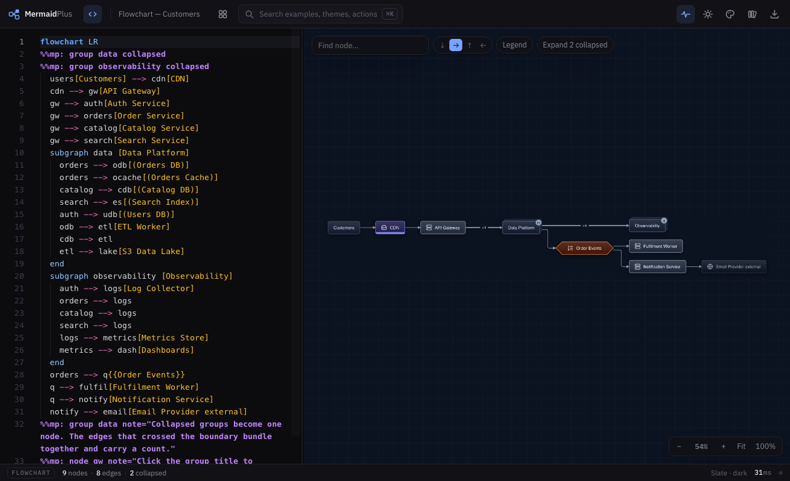
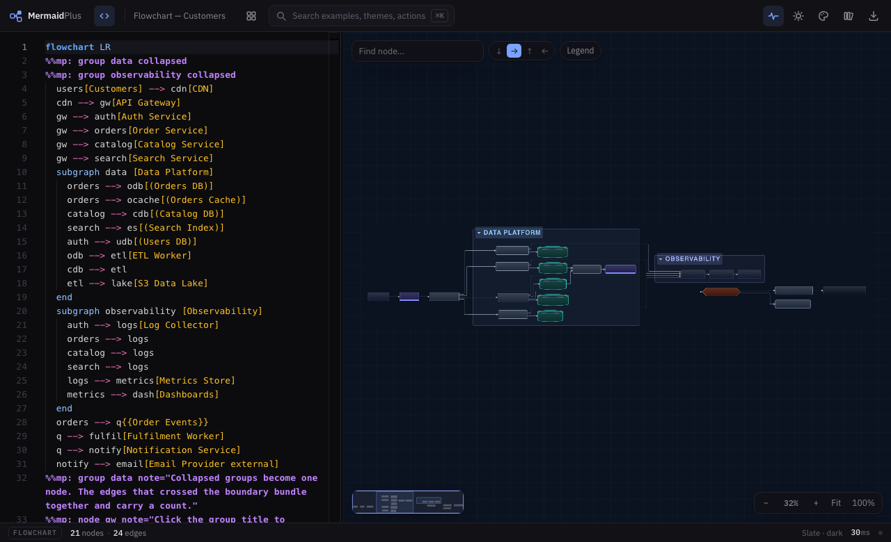
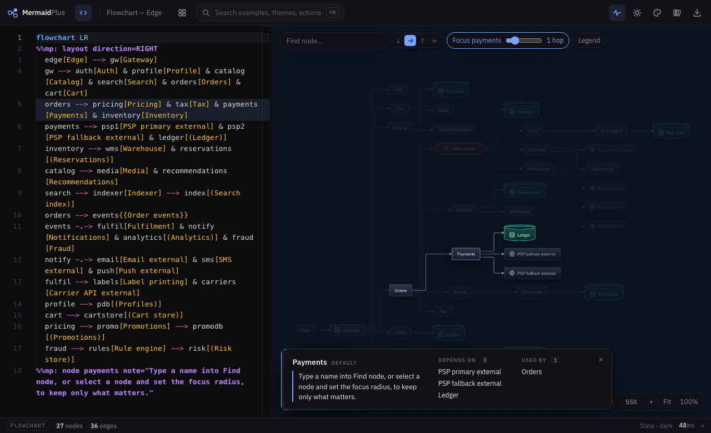
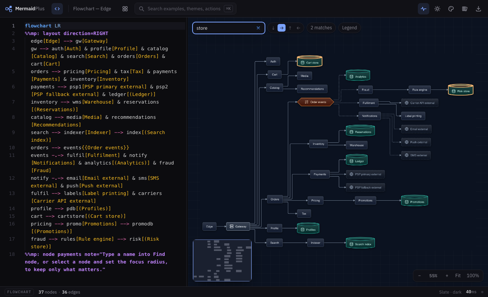

Chapter 3
Large systems
Past about thirty nodes a diagram stops being read and starts being wallpaper. Four tools keep a big system legible without deleting anything from it.
Collapse what you are not looking at
A subgraph can start collapsed. It becomes one node, and every edge that crossed its boundary bundles into a single line carrying a count.
%%mp: group data collapsed

Click a collapsed node, or a group title, to open it. Expand all in the canvas tools opens everything at once.

Focus on a neighbourhood
Select a node and set a radius: everything more than N hops away dims out. It answers "what does this actually touch" without deleting anything.

Find a node by name
Type into Find node and matches outline as you type. Press Enter to jump the viewport to the first one.

Turn it sideways
The four arrows in the canvas tools flip the flow direction. It rewrites your source rather than holding it as a setting, because it changes the whole picture and belongs in the document:
%%mp: layout direction=RIGHT
Top-to-bottom suits decisions and state. Left-to-right suits pipelines and request paths. It is worth trying both before you settle.
It stays fast. Five hundred nodes lay out in under a tenth of a second, and past a threshold the renderer draws only what is on screen. If a diagram feels slow, it is almost always because it is too big to read — collapse something.